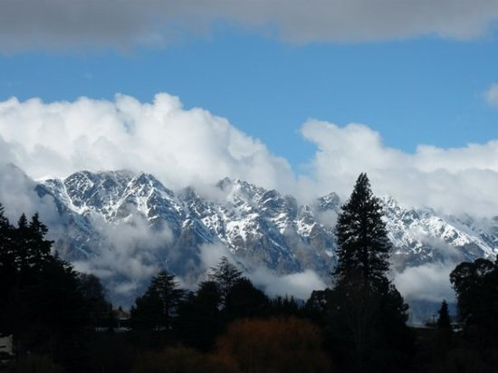
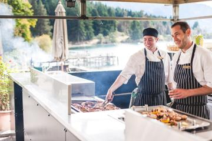
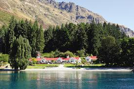

HOME
PLACES
ACCOMMODATION
GALLERY
CONTACT US
"Whenever I get stressed I just want to hop on a plane to Queenstown"
- John Travolta
PLACES TO VISIT
Lake Wakatipu
Ride the Skyline Gondola for iconic views across Queenstown and Lake Wakatipu.
Visit Glenorchy, set amongst ancient beech forests and on the doorstep of the Mount Aspiring National Park, it's a great place to enjoy horse riding, kayaking, walking and skydiving.
Take a scenic flight for a bird's eye view of the dramatic natural landscapes.
Draw inspiration from the amazing alpine surroundings as you play a round of golf on one of Queenstown's world-renowned courses. For something a little different, check out the 18-object frisbee golf course at the Queenstown Gardens.

The Remarkables
If you're visiting during the winter season, hit the slopes to go skiing or snowboarding or try snowshoeing.
Defy gravity and step out of your comfort zone with an adrenaline-pumping activity like bungy jumping, canyon swinging, canyoning or ziplining.
Hurtle through the air attached to a skydive instructor or soar like a bird as you hang glide or paraglide.
Get on a bike. Take an exhilarating heli-biking tour, ride with the locals on downhill tracks, check out the cross country biking trails or pedal around the lakefront.
Glenorchy Queenstown Road
Surrounded by magnificent snow-capped mountains, pristine lakes and rivers, ancient beech forests and at the edge of Mount Aspiring and Fiordland national parks, the frontier town of Glenorchy has provided the backdrop for many films, including The Hobbit and Lord of the Rings.
There are a range of accommodation options as well as numerous activities that will get you out into the great outdoors for which this area is famous.
There are also food and beverage options, a new camp ground and general store and a friendly community.
The area is also the gateway to several world-famous multi-day hikes including the Routeburn Track, one of New Zealand’s Great Walks.
Queenstown Gardens
The Queenstown Gardens are just a few minutes walk from central Queenstown and offer a beautiful and tranquil setting away from the hustle and bustle.
The landscaped gardens include plenty of places to sit down and admire the beauty of the gardens.
Pristine lawns, a large water feature, a wide variety of trees and plants and a rose garden all combine to provide that perfect escape from downtown Queenstown.
The gardens are also a popular place for enthusiasts of disc golf where 18 holes are laid out for you to complete a round of 'golf' with your disc. Metal baskets act as the holes with 'pars' offered for each hole and tees adding to the experience - it's no wonder it attracts the competitive type!
Coronet Peak
Adored by locals, Coronet Peak’s easily accessible rollercoaster terrain and excellent facilities make it the premier ski field in New Zealand’s adventure capital.
With The Peak’s 280 hectares of skiable area, snow sports centre, kids’ programmes, rental department and retail offerings, there is something for everyone.
Earlybirds and night owls are welcome as First Tracks starts at 8am and on Fridays and Saturdays we finish late with Night Skiing, a truly magical experience for all ages.
An extensive state -of-the-art, fully automated snowmaking system boosts Mother Nature’s snow helping coverage during the season, from the beginning of June to early October.
PLACES TO DINE
Skyline Gondola and Restaurant
Buffet lunch or dinner with spectacular views from Stratosfare Restaurant and Bar in Queenstown.
Quality all-you-can-eat buffet featuring fresh seafood and prime meats.
A scenic gondola ride will take you high above Queenstown where a unique dining experience awaits you.
Christmas day lunch and dinner includes a round-trip gondola ride, Christmas themed buffet, live entertainment, two luge rides and an appearance from Santa.
Take in the breathtaking panoramic views from Coronet Peak to Queenstown, Lake Wakatipu, the Remarkables and surrounding mountains.
 
Walter Peak High Country Farm and Cruise
Board the TSS ‘Earnslaw,’ a vintage steamship, for an evening cruise on Queenstown’s scenic Lake Wakatipu. Arriving at Walter Peak High Country Farm, you’re treated to a sumptuous barbecue dinner at the Colonel’s Homestead.
Sink your teeth into roasted meats and seafood, homemade desserts and a New Zealand cheeseboard while a pianist provides the ambiance.
After dinner, join a walking tour of the farm to see demonstrations, or simply relax in the bar where you can purchase wine and other beverages, before the return boat trip to Queenstown.
The Winery
Eat, drink and be merry on New Zealand’s stunning South Island with this wine and cheese tasting experience in Queenstown.
With your pre-loaded tasting card in hand, sample over 80 different Champagnes, sparkling wines, whiskies, ports and sherries.
Savor half or full measures of fine tipples such as pinot noirs from Otago and Marlborough’s famous sauvignon blancs.
Relax in leather chairs and enjoy the complex balances of scents and flavors in your glass.
Taste award-winning wines from across New Zealand and beyond, accompanied by a broad selection of delicious cheeses.
The Bunker Restaurant
Hidden away down a back alley in the centre of Queenstown behind a rustic old wooden door, The Bunker is your complete nightlife venue offering a restaurant, cocktail/late-night-bar and private group dining room.
The restaurant is small and intimate, ensuring a high level of quality and service; dim lighting and old school music create an almost private club atmosphere.
The menu focuses on locally sourced produce with European and Kiwi flavours, expertly crafted by Head Chef - Vincent Good.
The term 'rustic fine dining' describes The Bunker's cuisine and the overall experience, and can be described as uncomplicated, but perfectly matched flavours, passionately prepared using the best of local and domestic produce.
Botswana Butchery
Heavenly lake views, blazing log fires indoors and out, and an exceptionally sumptuous menu. Botswana Butchery; dine in style with gorgeous panoramic lake and mountain views.
The downstairs at Botswana Butchery seats 90 people comfortably. There are four private dining rooms available upstairs, accommodating groups from 2 through to 30 people.
There is a bar serving the restaurant downstairs, as well as a cosy lounge bar with roaring fire upstairs – the ideal location for an aperitif or an after dinner night cap.
Al Fresco styles to private dining suites, the ambiance is warm, welcoming and luxurious.